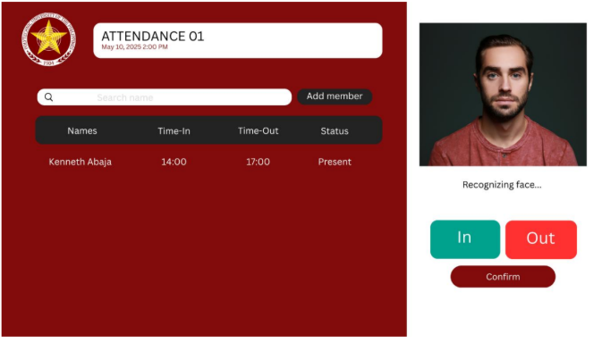
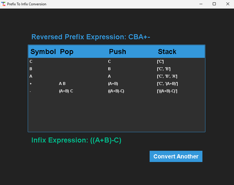
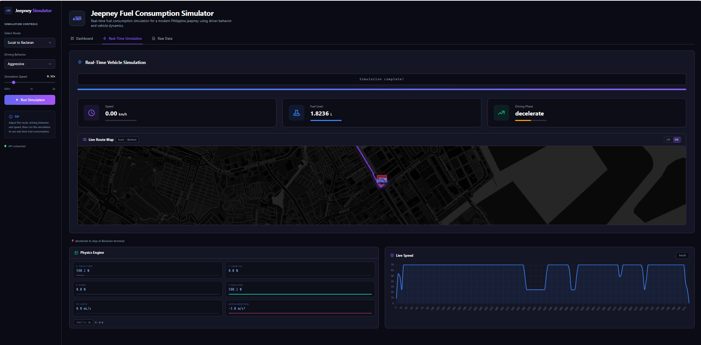

hi, i'm
zack / zackie
|
one call away — always.
1–8 to jump between sections
01 · about
who's zack?
known as zack — or zackie to those who know he's always a call away. a BSIT scholar at PUP Parañaque who keeps things moving without making a fuss about it.
he's a natural class officer and vice president — someone who reads the room before the room even knows it needs to be read. the kind of person who goes with the flow but somehow always ends up steering the ship.
a pisces. a listener. a fixer. and yes — always one call away.
02 · skills
what i bring
soft skills
tools & tech
03 · journey
how i got here
2023
started BSIT at PUP Parañaque
began the BSIT program as an iskolar ng bayan — first taste of programming, networking, and team-based coursework.
2024
stepped up as class officer & vice president
took on leadership roles in the class org — handling responsibilities, representing the section, and keeping everyone on the same page.
2025
built first major projects
PUPET Task Manager, Attendance Checker System, and Prefix-to-Infix Conversion — applying data structures, automation, and authentication in real coursework.
2026
networking deep-dive & this portfolio
working through multi-VLAN configurations, ACL troubleshooting, and inter-VLAN routing in Cisco Packet Tracer — and building this space to bring it all together.
04 · projects
things i've built

01
PUPET Task Manager
A task management system designed to help students organize tasks, monitor deadlines, and manage workloads efficiently. Improves productivity through structured task tracking and a user-friendly interface.

02
Attendance Checker System
A digital attendance monitoring system that records student time-in and time-out automatically. Includes authentication features and accurate attendance tracking for better monitoring and record keeping.

03
Prefix to Infix Conversion
A program that converts prefix expressions into infix expressions using stack data structures. Demonstrates knowledge in algorithms, expression parsing, and data structure implementation.

04
PUJ Fuel Consumption Simulator
A physics-based simulation of fuel consumption across driving behaviors (Aggressive, Moderate, Eco) for Public Utility Jeepneys in Parañaque City. Models an Isuzu 4JB1 diesel engine across four real routes with a Streamlit-connected web frontend.
nothing here yet — try another filter.
05 · links
find me at
* clicking opens a new tab
06 · faq
frequently asked questions
because i'm always one call away — simple as that. zackie works too if we're close. 😄
full-time student at PUP Parañaque taking BSIT, iskolar ng bayan. also a class officer and vice president in our section.
go with the flow — but always alert. i read the atmosphere first, then act. that's how things get done smoothly.
I'm currently still looking for opportunities, I'm still learning. But just drop me an email and we'll talk.
empathetic, intuitive, goes with the flow — but don't mistake chill for pushover. ♓
07 · contact
reach out
the easiest way to reach me is through email.
i don't bite — promise.
or find me through any of the social links above.